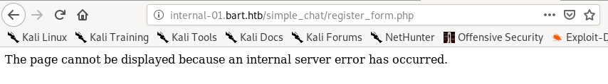

register_form.php
navigating to that page while crossing our fingers, we see we have a hit
modifying our request form from our captured login request, if we send the POST to register_form.php file, we see we get redirected, which is a good sign

taking a look at the source code of register.php:

simply put, if we submit an unregistered username and password to the register.php webpage, it will automatically register us!

lets give it a shot:


now the username st0ve and the password xiong should be registered to the simple chat
actually the pw needs to be 8 characters long

ill go with xiongxiong